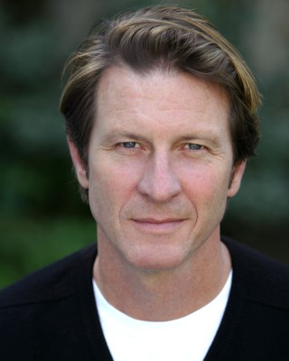
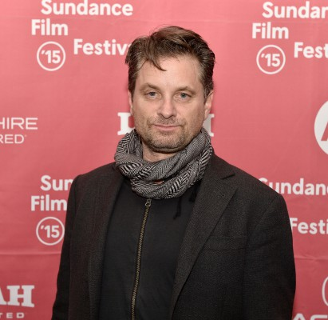
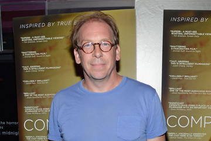
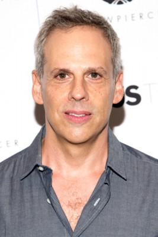
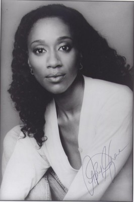
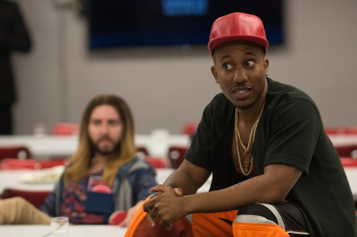
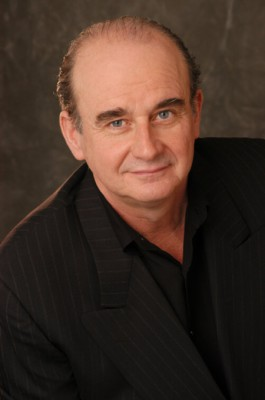
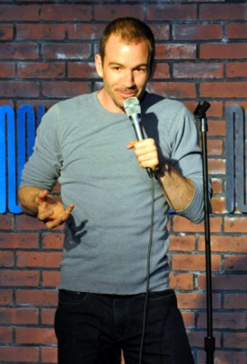
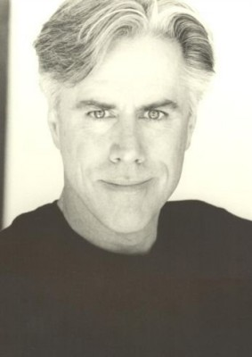

#12009 Joker
 gesehen am 11.11.2019
gesehen am 11.11.2019


 IMDB-Wertung: 8.7 / 10
IMDB-Wertung: 8.7 / 10  IMDB-TOP-Platzierung: 25
IMDB-TOP-Platzierung: 25  Tomatometer: 69
Tomatometer: 69  Metascore: 59
Metascore: 59 
Gotham City im Jahr 1981: Der mental instabile Arthur Fleck führt wahrlich nicht das Leben, von dem man träumt: Vollgepumpt mit Medikamenten geht er seiner Arbeit als kostümierter Werbeschildträger nach und wird nicht selten das Ziel von Spott und Attacken. Abends zieht es ihn in sein heruntergekommenes Apartment, wo er sich um seine kranke Mutter kümmern muss. Gemeinsam hoffen sie auf ein besseres Leben, das Arthur als Stand-Up-Komiker realisieren will. Als plötzlich die Förderung für seine psychologische Betreuung gestrichen wird, nimmt das Unheil seinen Lauf. Die Schusswaffe eines Kollegen, die Suche nach seinem echten Vater und plötzlicher Ruhm sorgen dafür, dass der einstmals harmlose Exzentriker die ganze Stadt in Angst und Schrecken versetzt...
BDRIP DUBBED
Jahr: 2019
Dauer: 121 Minuten
FSK: 16
Land: USA Studio: Warner Bros. PicturesTonspuren: DD2.0 - ,
Untertitel:
Auflösung: 1080p (1920x1040) Größe: 8017 MB
Genre: Thriller, Drama, Krimi
Regisseur: Todd Phillips
Drehbuch: Todd Phillips, Scott Silver, Bob Kane, Bill Finger, Jerry Robinson
Soundtrack: Hildur Guðnadóttir
Darsteller:
 Joaquin Phoenix als Arthur Fleck
Joaquin Phoenix als Arthur Fleck Robert De Niro als Murray Franklin
Robert De Niro als Murray Franklin- Zazie Beetz als Sophie Dumond
 Frances Conroy als Penny Fleck
Frances Conroy als Penny Fleck-  Brett Cullen als Thomas Wayne
-  Shea Whigham als Detective Burke
-  Bill Camp als Detective Garrity
 Glenn Fleshler als Randall
Glenn Fleshler als Randall- Leigh Gill als Gary
-  Josh Pais als Hoyt Vaughn
- Marc Maron als Gene Ufland
- Sondra James als Dr. Sally
- Murphy Guyer als Barry O'Donnell
 Douglas Hodge als Alfred Pennyworth
Douglas Hodge als Alfred Pennyworth- Dante Pereira-Olson als Bruce Wayne
- Carrie Louise Putrello als Martha Wayne
 Sharon Washington als Social Worker
Sharon Washington als Social Worker- Hannah Gross als Young Penny
 Frank Wood als Dr. Stoner
Frank Wood als Dr. Stoner Brian Tyree Henry als Carl (Arkham Clerk)
Brian Tyree Henry als Carl (Arkham Clerk)-  April Grace als Arkham Psychiatrist
- Mick Szal als Woman on Subway
- Carl Lundstedt als Wall Street Three
- Michael Benz als Wall Street Three
- Ben Warheit als Wall Street Three
- Gary Gulman als Comedian
- Sam Morril als Open Mic Comic
-  Chris Redd als Comedy Club Emcee
- Mandela Bellamy als Mother on Bus
- Demetrius Dotson II als Boy on Bus
- Greer Barnes als Haha's Clown
-  Ray Iannicelli als Haha's Clown
-  Bryan Callen als Haha's Stripper
- Peter Benson als Good Morning Host
- Adam Quezada als Street Kid
- Evan Rosado als Street Kid
- Damian Emmanuel als Street Kid
- Mike Troll als Clown Protestor
- Jane Fergus als IBN Anchorwoman
- David Gibson als WBC News Anchor
- Tony D. Head als WGC Anchorman
-  Jeff McCarthy als NCB Anchor
- Kim Brockington als NCB Co-Anchor
- Michael-Scott Druckenmiller als Paramedic
- Craig Austin als Paramedic
 John Cenatiempo als Aftermath Police Officer
John Cenatiempo als Aftermath Police Officer- Keith Buterbaugh als Band Leader
- James Ciccone als Murray Franklin Band
- David Iacono als Flirting Man On The Bus
- Chris Angerman als MFS Booth PA (uncredited)
Datei: X:\Comic-Filme\Joker (2019, FSK16, 1920x1040).mkv seit 10.11.2019
Festplatte: Comicverfilmungen+MusikCD
 Es gibt insgesamt 44 Filme in der Gruppe 'Comic-Filme'
Es gibt insgesamt 44 Filme in der Gruppe 'Comic-Filme'